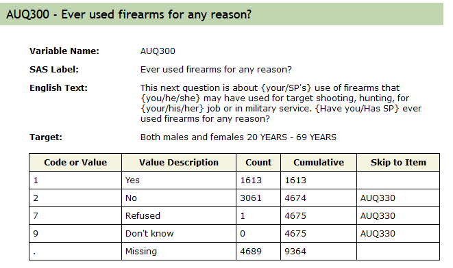
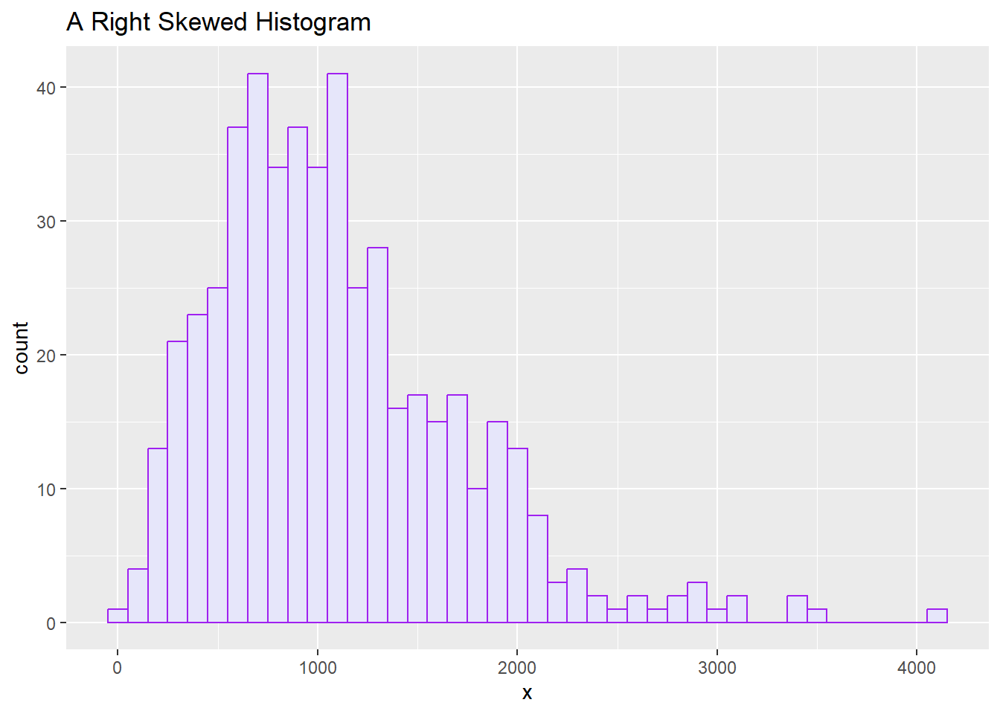
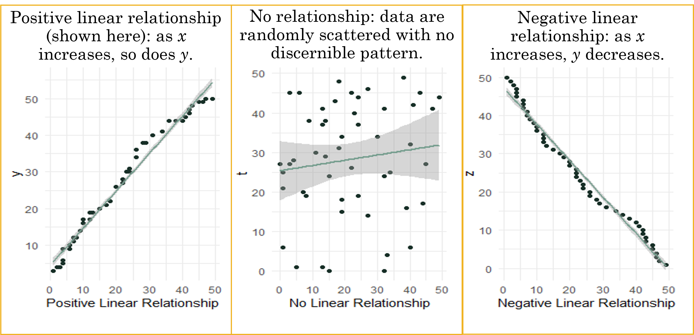

####################################
# Project name: Data Visualization
# Data used: mtcars - part of R. From Blackboard - nhanes2012.csv,
# fbi_deaths.csv., gss.2016.csv, and Edu.csv, UScrime from MASS package
# Libraries used: MASS, tidyverse (ggplot2), semTools
####################################5 Data Visualization
- The goals this lesson are to be able to create visualizations which help to describe a variable or variables more easily (descriptive statistics) and to explore patterns in the data based on groups or between two or more variables (inferential statistics).
5.0.1 At a Glance
In order to succeed in this lesson, we need to learn how to visualize data, noting that there are many ways to do this in R. This lesson presents common graphs used in R, and focuses on using ggplot2, a very common graphics package that is part of the tidyverse.
Because packages evolve fairly quickly, parameters within the commands shown in this section could evolve and adjust. The best way to figure out how to fine-tune your new graph is to explore options and parameter settings, while also using the open-source community.
By the end of this lesson, you should be able to create the following:
- Common Graphs for a Single Categorical Variable
- Common Graphs for a Single Continuous Variable
- Common Graphs for Two Variables at Once
- This lesson does not provide an exhaustive list of what you can do in R, but is a good starting point presenting some of the top graphs used in statistics with some common parameters added in.
5.0.2 Lesson Objectives
- Choose and create graphs for a single categorical variable.
- Choose and create graphs for a single continuous variable.
- Choose and create graphs for two variables at once.
5.0.3 Consider While Reading
It is extremely useful to graph data in R in order to visualize what the data is telling us.
When making graphs, there are a lot of ways to visualize data correctly, but there are just as many to do it incorrectly. Be careful not to force the data into the story you want it to tell.
Always be cautious when looking at visuals to make sure the data was handled properly.
The lesson is arranged by first evaluating the variable or variables of interest by data type (quantitative or quantitative) and then giving some examples of visualizations where this is commonly used. It is essential to make sure the variable is in the right data type before you create a chart. We look at many charts in this lesson including bar charts, density plots, boxplots and scatterplots. A multiple boxplot helps us understand the relationship between a grouping variable and a numerical variable. The scatterplot helps us understand if there is a relationship between two numerical variables and it helps us determine whether that relationship is linear or nonlinear.
A lot of graphs you can do in ggplot, you can also do with base R. However, ggplot has much more capability to customize a specific format for your graphic.
- Base R has many options to graph a variable or variables. If all you want is some insight into the data, this might be the way to go.
- ggplot2 is extremely popular graphing package and has a good pattern for making charts. You set the first layer with the ggplot() command and then add layers as needed for your graphic.
- There are also other graphing packages that serve a specific purpose (i.e., waffle package in R).
5.1 Layering in ggplot
- Layering is a fundamental concept in ggplot2 that allows you to build complex visualizations by adding different components (or “layers”) on top of each other. Each layer in a ggplot2 plot can represent different types of data, aesthetics, or annotations, enabling flexibility and control over how data is visualized. Layers can include geometries (e.g., points, lines, bars), statistical summaries, labels, grids, and themes.
- Separation of Plot Components: Each layer can handle a different part of the plot. For example, one layer may be used for bars, another for labels, and another for a trend line. This allows you to build up a plot step by step.
- Customization and Enhancement: By adding multiple layers, you can customize different aspects of the plot such as labels, colors, annotations, and theme elements. Each layer can be independently controlled.
- Modularity: Layering allows you to modularize your plot construction, making it easier to add, remove, or modify parts of the plot without changing the entire structure.
- Combining Data Sources: Different layers can use different datasets or aesthetics, which is useful when you need to overlay one dataset on top of another (e.g., adding a regression line over a scatter plot).
5.2 Graphs for a Single Categorical Variable
- A categorical variable has categories that are either ordinal with a logical order or nominal with no logical order.
- Categorical variables need to be set as the factor data type in R to be able to be analyzed and visualized correctly.
- Some common graphing options for single categorical variable:
- Bar graph
- Pie chart
- In any graph, it is beneficial to do any data cleaning and investigation into the variable(s) before you begin. With categorical variables, this may require recoding the factor(s) of interest and possibly renaming it/them to something meaningful if needed.
5.2.1 Bar Graph
- A bar graph depicts the frequency or the relative frequency for each category of the qualitative data as a bar rising vertically from the horizontal axis. A bar graph is also known as a bar chart and is often used to examine similarities and differences across categories of things; bars can represent frequencies, percentages, means, or other statistics.
- We can learn a lot from a bar graph, like the marital status group with the highest and lowest frequencies according to the census.gov.

5.2.1.1 geom_bar()
- Create a Bar Graph using ggplot() Command
- Like histograms, ggplot has many more parameters available over base R to construct bar graphs.
- First, we load tidyerse to access ggplot() command and others. You can always do this at the start of all your code to keep all the libraries together that are being used.
library("tidyverse")- ggplot() works in layers, so you will routinely see the + symbol to kick off a new layer with added functionality.
- Using the ggplot, we always include the aes() command first inside the ggplot() command. The aes() command is a quoting function that describes the variables being used. From there, it depends on the plot.
- First layer: ggplot() and aes() which calls the dataset and variables used.
- Second layer: Graph type: Bar graph: geom_bar().
- Additional layers: labs - for labels including titles; themes; and geom_text. Recreate the example below adding one layer at a time to see how the visualization changes.
5.2.1.2 Pertinent Parameters to the geom_bar()
- stat=“identity”: In ggplot2, the argument stat=“identity” is used inside the geom_bar when creating bar charts to specify that the actual values of the data should be plotted, rather than calculated summary statistics. By default, ggplot assumes that bar charts use stat=“count”, which counts the number of observations in each category. When you want to display the actual values in your dataset (e.g., sales numbers, average scores), you need to set stat=“identity” to ensure that the y-values are mapped directly from the data rather than being automatically counted.
- position=“dodge”: If we have more than one categorical variable, we might set the position=“dodge” argument. This argument controls how the bars are positioned relative to each other when you are plotting multiple categories within a bar chart. By default, bars in a bar chart are stacked, and setting position=“dodge” ensures that they are placed side-by-side. This is particularly useful when you are comparing multiple groups or categories within the same plot, as it allows for a clear visual distinction between each group. In the example below, we only have one variable, so position=“dodge” argument is not needed.
- In combination, using stat=“identity” and position=“dodge” is common when you want to compare different categories or groups with specific values in a side-by-side manner, ensuring the chart is easy to interpret. For example, if you are comparing sales figures across different products for multiple years, this approach would give you a bar for each product in each year, clearly separated.
- show.legend = FALSE: In ggplot2, the argument show.legend = FALSE is used to hide the legend for a particular layer or the entire plot. By default, ggplot2 automatically adds a legend if you include aesthetics like color, size, or shape that distinguish groups in your data. If you don’t want the legend to appear, you can set show.legend = FALSE.
- scale_fill_manual(): When creating grouped bar charts or other plots with multiple categories, it’s important to ensure that the visual distinction between groups is clear. This is where manually setting the colors for each category comes into play. The scale_fill_manual() function in ggplot2 allows you to manually define the colors used for the filled areas, such as the bars in a bar chart or the shaded areas in an area chart. By using the values argument within scale_fill_manual(), you can specify a custom color palette that suits your design or presentation needs. For example, you might choose a palette of yellow and brown to represent different categories. A key aspect of using scale_fill_manual() effectively is knowing how many colors to provide. The number of colors you define in the values argument must match the number of levels or categories in your data. If you are comparing three product categories, for instance, you’ll need to provide exactly three colors—one for each category. Failing to match the number of colors to the number of categories can result in errors or misrepresentation in the plot. For example, if you have four levels (e.g., four different product categories or groups) and only provide two colors, ggplot may not know how to properly assign colors to the additional categories. Therefore, it’s crucial to know the number of distinct categories in your data and plan your color palette accordingly to maintain clarity and visual consistency in your chart.
## inputting probabilities calculated from a 2023 multiple choice
## question. From what you learned about R so far, how do you expect
## its market share to change?
GoUp <- 0.54285
GoDown <- 0.03809
RemainStable <- 0.34285
NoOpinion <- 0.07619
# designing the data frame
data_frame <- data.frame(Category = c("Go Up", "Go Down", "Remain Stable",
"No Opinion"), Percentage = c(GoUp, GoDown, RemainStable, NoOpinion))
# Making the graph
MarketShare <- ggplot(data_frame, aes(x = Category, y = Percentage, fill = Category)) +
geom_bar(stat = "identity", show.legend = FALSE) + labs(title = "How do you expect R's market share to change?",
x = "Opinion Category", y = "Percentage (%)") + theme_minimal() + geom_text(aes(label = Percentage),
vjust = -0.5, size = 4) + scale_fill_manual(values = c("red", "blue",
"purple", "green"))
MarketShare
5.2.2 Bar Graph with Data Wrangling
- Let’s start an example from scratch so that we can see each parameter take effect. In doing so, lets use a dataset to make a bar graph instead of relying on pre-calculated data.
- Lets examine the AUQ300 variable from the nhanes survey to run an example.
nhanes <- read.csv("data/nhanes2012.csv")- Next, we need to check the import by looking at the summary or head of the data.
# Results hidden to save space, but gives you the first 6 records in
# the data set.
head(nhanes)- We can also check the summary of data of only the variable of interest, AUQ300, to get a sense of what we are evaluating.
summary(nhanes$AUQ300) Min. 1st Qu. Median Mean 3rd Qu. Max. NA's
1.000 1.000 2.000 1.656 2.000 7.000 4689 - The AUQ300 variable represents gun use. A screenshot of the codebook is copied below so that we can see what AUQ300 really refers to. It is available on https://wwwn.cdc.gov/Nchs/Nhanes/2011-2012/AUQ_G.htm. This is always a necessary step because variable names can be convoluted and not representative of the variable definition.

5.2.2.1 Recode Variable if Needed
- Look to see if the AUQ300 needs recoding after looking at the codebook and making sense of the variable.
- AUQ300 needs to be a factor variable with 1 equaling a Yes and 2 equaling a No. We can use recode_factor to accomplish 2 things at once with the mutate function.
- recode_factor() transforms the levels of a categorical variable (factor) into a new set of levels and is specific to categorical variables.
- recode() is generic and can apply to numerical, categorical, or textual data, but still transforms data from one format or code to another.
nhanes.clean <- nhanes %>%
select(AUQ300) %>%
mutate(AUQ300 = recode_factor(AUQ300, `1` = "Yes", `2` = "No"))- Then, we need to check the recode for accuracy. You should see the No’s and Yes’s alongside the rest being coded as NA’s.
summary(nhanes.clean) AUQ300
Yes :1613
No :3061
NA's:4690 5.2.2.2 Get Bar Roughly Plotted
Start with the basic plot using the ggplot() and geom_bar() commands.
Below writes the statement with and without the piping operator.
- Since we are also going to use data preparation techniques, the piping operator is recommended.
# Without piping operator ggplot(nhanes.clean, aes(x = AUQ300)) + geom_bar()
# With piping operator nhanes.clean %>% ggplot(aes(x = AUQ300)) + geom_bar()
5.2.2.3 Add Functions to Clean Chart
- Omit the NA category from AUQ300 variable, which represents gun use. Then plot the graph below.
- The drop_na() function is a good way to drop NA values from either the entire dataset or just one variable. It was introduced in the data prep lesson. Since we are only interested in dropping NA values from our one variable of interest that is to be graphed (AUQ300), we can put it in the parentheses so that we do not unintentionally drop lots of observations for no reason.
- Add an axis labels under labs(x = …, y=…).
nhanes.clean %>%
drop_na(AUQ300) %>%
ggplot(aes(x = AUQ300)) + geom_bar() +
labs(x = "Gun use", y = "Number of participants")
##Here, we really benefit from the piping operator because we are doing more than one thing.- From the bar graph, we can see that almost double the amount of people have not fired a firearm for any reason than those that fired one.
5.2.2.4 Adding Color
There are many ways to add color to a bar graph. Below, the color is filled in directly in the aes() command by choosing it to give a different color to each categorical value of AUQ300.
- When fill is mapped to a variable, the fill color of the geom will vary based on the values of that variable. This is useful for distinguishing different groups or categories within the data. In this case the fill=AUQ300 gives a distinct color pattern based on how many categories there are considering the fact we are using the default “scale.”
nhanes.clean %>% drop_na(AUQ300) %>% ggplot(aes(AUQ300, fill=AUQ300)) + geom_bar() + labs(x = "Gun use", y = "Number of participants", subtitle = "Filled inside the aes()")
5.2.2.5 Data Prep and Then Visualized
In the command below, we create a gss.2016.cleaned object to make a barplot. In doing so, we do the following:
Create a bar graph using the ggplot() command, which requires an aes() quoting function. This function says that we want to use the grass variable in our bar graph.
Drop all NAs from the grass variable so that legal and not legal are the only categories.
We then create the bars and fill them with 2 colors, red and purple. Many color codes can be used here, and will be discussed in a later lesson.
We then add labels to our graph on both x and y axis.
Finally, we print the new graph, which is saved under the legalize.bar object.
Below, I brought back over the code from the last part in Data Preparation. You should still have this in your Chapter1.R file. We are going to use that file to create a graphics in R.
gss.2016 <- read_csv(file = "data/gss2016.csv")
gss.2016.cleaned <- gss.2016 %>%
mutate(grass = as.factor(grass)) %>%
mutate(grass = na_if(x = grass, y = "DK")) %>%
mutate(grass = na_if(x = grass, y = "IAP")) %>%
mutate(grass = droplevels(x = grass)) %>%
mutate(age = recode(age, `89 OR OLDER` = "89")) %>%
mutate(age = as.numeric(x = age)) %>%
mutate(age.cat = cut(x = age, breaks = c(-Inf, 29, 59, 74, Inf), labels = c("< 30",
"30 - 59", "60 - 74", "75+")))- Once the data is prepped, we can graph the variable or variables.
ggplot(gss.2016.cleaned, aes(grass)) + geom_bar() ##with no piping operator
gss.2016.cleaned %>%
ggplot(aes(grass)) + geom_bar() ##with piping operator
# Make a Bar Graph for Grass Variable
gss.2016.cleaned %>%
drop_na() %>%
ggplot(aes(grass)) + geom_bar(fill = c("red", "blue")) + labs(x = "Should marijuana be legal",
y = "Frequency of Responses")
5.2.2.6 Edit The Graphic
- Next, we can edit these commands to include the age variable. The aes() quoting function has expanded to have the bars filled color using the grass variable, the age category has replaced the grass variable on the x axis.
gss.2016.cleaned %>%
drop_na() %>%
ggplot(aes(age.cat, fill = grass)) + geom_bar() + labs(x = "Age Category",
y = "Frequency of responses")
- We can add the position set at “dodge” inside the geom_bar() layer to make the barchart unstacked (or grouped).
gss.2016.cleaned %>%
drop_na() %>%
ggplot(aes(age.cat, fill = grass)) + geom_bar(position = "dodge") +
labs(x = "Age Category", y = "Frequency of responses")
- We can edit further to include a new a formula on the y axis to sum and count.
- In the formula you provided, after_stat(count) is used within the ggplot2 framework to refer to the computed statistic generated by the geom_bar() function. Specifically, in the context of bar plots, count refers to the number of observations (or frequency) for each category within the data.
- When you use after_stat(count), you are referencing the count that is computed after geom_bar() has processed the data and calculated how many observations fall into each group (in this case, within each age category and the “grass” variable, which likely refers to attitudes toward marijuana legalization).
- We also gave this a theme and updated the labels.
gss.2016.cleaned %>%
drop_na() %>%
ggplot(aes(age.cat, y = 100 * (after_stat(count))/sum(after_stat(count)),
fill = grass)) + geom_bar(position = "dodge") + theme_minimal() +
labs(x = "Age Category", y = "Percent of responses")
- Evaluate these graphs and see what information you can get from them.
5.2.3 Pie Chart
- A pie chart is a segmented circle whose segments portray the relative frequencies of the categories of a qualitative variable.
- Slices of pie in different colors represent the parts.
- In this example, the firearm is divided by type to show parts of a whole, where the total of the proportions must add to 1.0 and the total of the percentages must add to 100%.
# Importing data from working directory
fbi.deaths <- read.csv("data/fbi_deaths.csv", stringsAsFactors = TRUE)
# Selecting rows of interest for pie chart
fbi.deaths.small <- fbi.deaths[c(3, 4, 5, 6, 7), ]
fbi.deaths.small <- fbi.deaths.small %>%
rename(Weapon = X)
# Checking summary of fbi deaths
summary(fbi.deaths.small) Weapon X2012 X2013 X2014
Firearms, type not stated:1 Min. : 116 Min. : 123 Min. : 93
Handguns :1 1st Qu.: 298 1st Qu.: 285 1st Qu.: 258
Other guns :1 Median : 310 Median : 308 Median : 264
Rifles :1 Mean :1779 Mean :1691 Mean :1662
Shotguns :1 3rd Qu.:1769 3rd Qu.:1956 3rd Qu.:2024
Asphyxiation :0 Max. :6404 Max. :5782 Max. :5673
(Other) :0
X2015 X2016
Min. : 177 Min. : 186
1st Qu.: 258 1st Qu.: 262
Median : 272 Median : 374
Mean :1956 Mean :2201
3rd Qu.:2502 3rd Qu.:3077
Max. :6569 Max. :7105
- Again, ggplot works in layers, so in order to make a pie, you need a few layers and have a few optional ones.
- The aes() command specifies the variable to create the pie, in this case x2016.
- geom_col() sets the borders of the pie and makes it visible.
- coord_polar() command makes the pie circular.
- theme_void() command is optional and adjusts the theme of the pie. to remove axis, background, etc.
ggplot(fbi.deaths.small, aes(x="", y=X2016, fill=Weapon)) +
geom_col() +
coord_polar("y", start=0) +
theme_void() 
- From the pie, we can see that the majority of weapons that caused fbi gun related deaths are handguns followed by a type of firearm that is not stated.
5.2.4 Comparison of Charts
- Recommended graphs for single categorical or factor type variable:
- Bar graph, for showing relative group sizes.
- Pie charts are available in R but are not recommended because they tend to be less clear for comparing group sizes.
- Pie charts are difficult to read since the relative size of pie pieces is often hard to determine.
- Pie charts take up a lot of space to convey little information.
- People often use fancy formatting like 3D, which takes up more space and makes understanding relative size of pie pieces even more difficult.
5.3 Graphs for a Single Continuous Variable
- A continuous variable refers to a variable that can take any value over a range of values.
- A continuous variable needs to be numeric, and could be integer type or numeric type in R. Just like with graphs that include categorical variables, it is beneficial to do any data cleaning and investigation into the variable(s) before you begin. With continuous variables, this may require recoding the variable to coerce it to the appropriate data type and/or renaming it to something meaningful if needed.
- It is also beneficial to make sure the numerical variable is indeed supposed to be numerical (as opposed to a factor). For instance, you commonly see numbers listed for categories like the Yes/No coded as a 1/2, such as with the AUQ300 variable.
Some common graphing options for single continuous variable:
- Histograms (From Lesson 2)
- Density plots
- Boxplots
- Violin plots
5.3.1 Histograms
A histogram is a useful plot to determine central tendency and spread.
We went over histograms in Lesson 2, so refer back for information on how to create a histogram using base R and ggplot.
Remember that you can tell the distribution from a histogram, and that distribution can be normal or skewed (Right or Left).
With each chart based on quantitative data, you should be able to get a sense of the distribution.
The histogram below looks right skewed.

5.3.2 Density Plots
A density plot is similar to a histogram but more fluid in appearance because it does not have the separate bins.
Probability density is not very useful for interpreting what is happening at any given value of the variable on the x-axis, but it is useful in computing the percentage of values that are within a range along the x-axis.
The area under the curve in a density plot could be interpreted as the probability of a single observation or a range of observations.
We can use random normal data to create the density plot like shown below with a sample of 1000, a mean of 10 and a standard deviation of 2. To do this, we need to make the vector and assign it to a data frame.
In R, set.seed() is a function used to set the seed for random number generation. By setting a seed using set.seed(), you ensure reproducibility of your code. If you run the same code with the same seed, you’ll get the same sequence of random numbers every time. This is particularly useful for debugging, testing, or when you want to ensure that your results are reproducible.
We use set.seed before any function with a random normal generator to ensure reproducibility.
If a dataset is provided, then you do not need to generate your own random data as shown in the step below.
set.seed(1)
x <- rnorm(1000, mean = 10, sd = 2)
df <- data.frame(x)- Next, we can make the density plot using the ggplot2 package under tidyverse.
- Layer 2 includes the geom_density() command in addition to the standard Layer 1 ggplot() command to create the density plot.
ggplot(df, aes(x)) + geom_density()
There are a lot of arguments you can change. I selected a couple below. Be sure to look at the help file on the geom_density() layer to get the variety on what you can do.
- color = sets a line color
- lwd = makes the line thicker. Increase this number for thicker line.
- fill= colors the area under the curve.
- alpha= sets the transparency to the area under the curve.
ggplot(df, aes(x)) + geom_density(color = "darkblue", lwd = 2)
ggplot(df, aes(x)) + geom_density(color = "darkblue", fill = "lightblue",
alpha = 0.5)
- We can even add a mean line, which we know in this case is 10 because we used random normal data with that mean set as a parameter.
- geom_vline() is a function used to add vertical lines to a plot created with ggplot. This function is useful for visually indicating specific points or ranges on the x-axis.
- You can do a line break in your R code after a comma (\(,\)) or after a plus sign (\(+\)). I find things easier to read on less lines, but it is personal preference how many lines you use given still following the rules in R.
ggplot(df, aes(x)) + geom_density(color = "darkblue", fill = "lightblue",
alpha = 0.5) + geom_vline(aes(xintercept = mean(x)), color = "red",
linetype = "dashed", lwd = 1)
- You do not need the rnorm function if you are provided a dataset with a numerical variable. The following code uses the customers dataset to do 2 examples of density plots with 2 numerical variables.
customers <- read.csv("data/customers.csv")
str(customers)'data.frame': 200 obs. of 10 variables:
$ CustID : int 1530016 1531136 1532160 1532307 1532356 1532387 1533017 1533561 1533697 1533766 ...
$ Sex : chr "Female" "Male" "Male" "Male" ...
$ Race : chr "Black" "White" "Black" "White" ...
$ BirthDate: chr "12/16/1986" "5/9/1993" "5/22/1966" "9/16/1964" ...
$ College : chr "Yes" "Yes" "Yes" "Yes" ...
$ HHSize : int 5 5 2 4 5 2 3 5 3 2 ...
$ Income : int 53000 94000 64000 60000 47000 67000 84000 76000 42000 71000 ...
$ Spending : int 241 843 719 582 845 452 153 1079 247 708 ...
$ Orders : int 3 12 9 13 7 9 2 23 3 4 ...
$ Channel : chr "SM" "TV" "TV" "SM" ...ggplot(customers, aes(Income)) + geom_density()
ggplot(customers, aes(Orders)) + geom_density(color = "#745033", fill = "#740000",
alpha = 0.5)
5.3.3 Boxplot
A boxplot is a visual representation of data that shows central tendency (usually the median) and spread (usually the interquartile range) of a numeric variable for one or more groups.
Boxplots are often used to compare the distribution of a continuous variable across several groups.
A box plot allows you to:
- Graphically display the distribution of a data set.
- Compare two or more distributions.
- Identify outliers in a data set.

- Boxplots include the following information:
- A line representing the median value.
- A box containing the middle 50% of values.
- Whiskers extending to 1.5 times the IQR.
- Outliers more than 1.5 times the IQR away from the median.

- This boxplot above displays 5 summary values:
- S = smallest value.
- L = largest value.
- Q1 = first quantile = 25th percentile.
- Q2 = median = second quantile = 50th percentile.
- Q3 = third quantile = 75th percentile.
- For example, use the GrowthFund Vector from the last lesson. It is executed again below.
GrowthFund <- c(-38.32, 1.71, 3.17, 5.99, 12.56, 13.47, 16.89, 16.96, 32.16,
36.29)
GrowthFund <- as.data.frame(GrowthFund)- The quantile() function returns the five point summary when no arguments are specified where the 25th percentile is Quarter 1, and the 75 percentile is Quarter 3. The 50th percentile is the median.
QuanData <- quantile(GrowthFund$GrowthFund)
QuanData 0% 25% 50% 75% 100%
-38.3200 3.8750 13.0150 16.9425 36.2900 5.3.4 Detecting Outliers
- We see an outlier visually, but without the tool available, we can detect them through the statistics. First we calculate the IQR, which is just quarter 3 minus quarter 1.
summary(GrowthFund$GrowthFund) Min. 1st Qu. Median Mean 3rd Qu. Max.
-38.320 3.875 13.015 10.088 16.942 36.290 IQRvalue <- 16.9425 - 3.875
IQRvalue[1] 13.0675IQRvalue <- IQR(GrowthFund$GrowthFund)
IQRvalue[1] 13.0675- Then, multiply the IQR by 1.5.
OutlierValue <- IQRvalue * 1.5
OutlierValue[1] 19.60125Finally conduct 2 checks to determine if outliers are past the low whisker and/or high whisker.
- A TRUE value indicates that at least one outlier is present at the small end of the distribution.
- A FALSE value indicates that no outliers are at the high end of the distribution.
QuanData 0% 25% 50% 75% 100%
-38.3200 3.8750 13.0150 16.9425 36.2900 QuanData[2] - QuanData[1] > OutlierValue 25%
TRUE # True indicating an outlier to the left
3.875 - -38.32 #42.195[1] 42.19542.195 > 19.60125 #TRUE[1] TRUEQuanData[5] - QuanData[4] > OutlierValue 100%
FALSE # False indicating no outlier to the right.
36.29 - 16.9425 #19.3475[1] 19.347519.3475 > 19.60125 #FALSE [1] FALSE- You can also more formally test by using the following formulas.
- \(Lower bound=Q1−1.5×IQR\)
- \(Upper bound=Q3+1.5×IQR\)
- A data point \(x\) is an outlier if \(x\) less than lower bound or \(x\) is greater than the upper bound. Confirming what we found above, we determine one outlier is present to the left.
LowerBound <- 3.875 - 1.5 * IQRvalue
LowerBound[1] -15.72625Q1 <- QuanData[2]
Q1 #3.875 25%
3.875 LowerBound <- Q1 - OutlierValue
LowerBound #-15.72625 25%
-15.72625 UpperBound <- 16.9425 + 1.5 * IQRvalue
UpperBound[1] 36.54375Q3 <- QuanData[4]
Q3 #16.9425 75%
16.9425 UpperBound <- Q3 + OutlierValue
UpperBound #36.54375 75%
36.54375 ## Insert Lower bound and Upper bound in vector to determine if
## outliers are present: (-38.32, LowerBound 1.71, 3.17, 5.99, 12.56,
## 13.47, 16.89, 16.96, 32.16, 36.29, UpperBound)
## one outlier to the left, -38.32.5.3.4.1 GrowthFund Boxplot
- We can use ggplot to retrieve our graph and associated numbers.
- The outlier is visually depicted on the graph as -38.32.
ggplot(GrowthFund, aes(GrowthFund)) + geom_boxplot()
- We can add a little color to the plot with the fill parameter, but then we also need to be sure to turn off the legends in the geom_boxplot.
ggplot(GrowthFund, aes(GrowthFund)) + geom_boxplot(fill = "red")
- You can add parameters to make this visualization more professional, but this gets you started. Be sure to look at some examples in the R community or on ChatGPT.
5.3.5 Violin Plots
- A visual display of data that combines features of density plots and boxplots to show the distribution of numeric variables, often across groups.
5.3.5.1 GrowthFund Example
- We can look at the GrowthFund example we had as a boxplot above as a violin plot. In order to make the change, we alter the second layer from geom_boxplot() to geom_violin().
GrowthFund %>% ggplot(aes(x="", y=GrowthFund))+
geom_violin() + theme_minimal() + coord_flip()
5.3.5.2 2nd Example Checking for outliers with mtcars dataset mpg variable
- We can also view mpg from the mtcars data set as a violin plot because it is a numerical variable. In the plot below, I graphed mpg as a violin plot. You can also embed other visual markers like mean and median or layer on another graph like a boxplot.
- You can see that this violin plot is vertical. The coord_flip() command we used above flips the chart horizontal the same way it flips a boxplot.
mtcars %>%
ggplot(aes(x="", y = mpg)) +
geom_violin(fill="lightgreen") +
theme_minimal() 
- We could also merge both a violin and a boxplot. The code below shows two separate charts (and also flipped) using the following code and then merges them into one visualization.
- The width parameter controls the width of the boxes in a boxplot or the width of the violins in a violin plot. You can vary this parameter to create better depth.
data(mtcars)
mtcars %>%
ggplot(aes(x = "", y = mpg)) + geom_boxplot(color = "#986D00", fill = "#24585E") +
theme_minimal() + coord_flip()
- Let’s get some summary statistics to check for outliers, skewness, and kurtosis to see how our visual aids help us in understanding those results.
IQRvalue <- IQR(mtcars$mpg)
OutlierValue <- IQRvalue * 1.5
OutlierValue #11.0625[1] 11.0625QuanData <- quantile(mtcars$mpg)
QuanData 0% 25% 50% 75% 100%
10.400 15.425 19.200 22.800 33.900 QuanData[2] - QuanData[1] > OutlierValue 25%
FALSE # Using the numbers from QuadData
15.425 - 10.4 > 11.0625[1] FALSE# False indicating no outlier to the left
QuanData[5] - QuanData[4] > OutlierValue100%
TRUE 33.9 - 22.8 > 11.0625[1] TRUE# TRUE indicating an outlier to the right.- We can see more specific information on outliers if we calculate the lower bound and upper bound and insert the values into the vector.
Q1 <- QuanData[2]
Q1 25%
15.425 LowerBound <- Q1 - OutlierValue
LowerBound #4.3625 25%
4.3625 Q3 <- QuanData[4]
Q3 75%
22.8 UpperBound <- Q3 + OutlierValue
UpperBound #33.8625 75%
33.8625 sort(mtcars$mpg) [1] 10.4 10.4 13.3 14.3 14.7 15.0 15.2 15.2 15.5 15.8 16.4 17.3 17.8 18.1 18.7
[16] 19.2 19.2 19.7 21.0 21.0 21.4 21.4 21.5 22.8 22.8 24.4 26.0 27.3 30.4 30.4
[31] 32.4 33.9[LowerBound: 4.3625] 10.4 10.4 13.3 14.3 14.7 15.0 15.2 15.2 15.5 15.8 16.4 17.3 17.8 18.1 18.7 19.2 19.2 19.7 21.0 21.0 21.4 21.4 21.5 22.8 22.8 24.4 26.0 27.3 30.4 30.4 32.4 [UpperBound: 33.8625)] 33.9
semTools::skew(mtcars$mpg) #normalskew (g1) se z p
0.672 0.433 1.553 0.120 semTools::kurtosis(mtcars$mpg) #mesokurticExcess Kur (g2) se z p
-0.022 0.866 -0.025 0.980 Looks like the mpg variable is quite normal with one potential outlier to the right, but no major signs of skewness or kurtosis.
We can also get a histogram of mpg and are able to make the same claims towards normality. You can see a slight pull to the right, but it is seemingly normal. A higher sample size could help here.
ggplot(mtcars, aes(mpg)) + geom_histogram(binwidth = 5, color = "black",
fill = "green")
5.4 Graphs for Two Variables At Once
- Combinations of 2 Variable Types for Graphing
- Two categorical/ factor.
- One categorical/ factor and one continuous/ numeric.
- Two continuous/ numeric.
5.4.1 Bar Graphs for Two Categorical Variables
- There are two formats available for bar charts:
- Grouped
- Stacked
# A tibble: 6 × 3
# Groups: vs, gear [6]
vs gear n
<dbl> <dbl> <int>
1 0 3 12
2 0 4 2
3 0 5 4
4 1 3 3
5 1 4 10
6 1 5 1

5.4.1.1 Grouped Bar Graph
Grouped bar graph allow comparison of multiple sets of data items, with a single color used to denote a specific series across all sets.
For example, we can look at both the vs and gear variables in the ggplot command.
- You can do a little grouping and counting before you began to generate a new table with frequencies based on vs and gear variables. Once a new dataset object is made, you can make the graph with the geom_bar layer specifying the stat=“identity”.
- Since there are two variables, you can set the position to dodge to view the fill categorical variable side by side.
- (stat = “identity”) tells ggplot that the y values are already computed and should be used as-is for the heights of the bars. In this case, they are frequencies calculated in the countsDF dataset.
mtcars <- mtcars %>%
mutate(vs = as.factor(vs)) %>%
mutate(gear = as.factor(gear))
countsDF <- mtcars %>%
group_by(vs, gear) %>%
count()
summary(countsDF) vs gear n
0:3 3:2 Min. : 1.000
1:3 4:2 1st Qu.: 2.250
5:2 Median : 3.500
Mean : 5.333
3rd Qu.: 8.500
Max. :12.000 ggplot(countsDF, aes(x = gear, y = n, fill = vs)) + geom_bar(stat = "identity",
position = "dodge") + labs(title = "Grouped Car Distribution by Gears and VS",
x = "Number of Gears", y = "Count") + theme_minimal()
5.4.1.2 Stacked Bar Graph
- A Stacked bar graph extends the standard bar graph from looking at numeric values across one categorical variable to two. Each bar in a standard bar graph is divided into a number of sub-bars stacked end to end, each one corresponding to a level of the second categorical variable.
- Using ggplot, we can also stack these charts by removing the position = dodge statement.
ggplot(countsDF, aes(x = gear, y = n, fill = vs)) +
geom_bar(stat = "identity") +
labs(title = "Stacked Car Distribution",
x = "Number of Gears",
y = "Count") +
theme_minimal()
5.4.1.3 Bar Graph for Continuous Across Groups
In comparison to a bar graph for a single categorical variable, a bar chart for a continuous variable across groups includes both a x and y axis. The continuous variable is put on the y axis, and the categorical (factor) variable is placed on the x axis showing the groups.
Therefore, instead of counting data based on group, we can see another continuous variable based on group data.
The frequency data (i.e., counts) can be replaced with another numerical variable like mean.
In the below example, instead of counting observations per group, here, we took the average mpg (a continuous variable) based on groups of gear and vs and summarized the data into a variable avg_mpg. We then used that variable in a ggplot() command to create a unique chart to that above.
avg_mpg <- mtcars %>%
group_by(gear, vs) %>%
summarise(mpg = mean(mpg, na.rm = TRUE))ggplot(avg_mpg, aes(gear,
mpg, fill = vs)) +
geom_bar(stat = "identity", position = "dodge") +
ggtitle("Average MPG by VS and Gear")
- Below, we can add color using the scale_fill_manual. Since there are two colors, we use the c() command to combine them together inside the layer.
ggplot(avg_mpg, aes(gear, mpg, fill = vs)) + geom_bar(stat = "identity",
position = "dodge", color = "black") + ggtitle("Average MPG by VS and Gear") +
scale_fill_manual(values = c("yellow", "brown"))
5.4.2 Boxplot for Continuous Across Groups
A boxplot requires one continuous variable (like we did above). When we include an additional grouping variable, we get multiple boxplots, one for each group. This allows us to directly compare distributions.
The categorical variable should correctly be a factor data type before you begin.
In the example below, mpg is the continuous variable, and gear is the categorical variable.
We see 3 boxplots for three values of gear (3, 4, 5). ggplot() and geom_boxplot() are required components of the command. The scale_fill_manual() and theme_minimal() layers are optional ways to change the style and color.
mtcars %>%
ggplot(aes(x = gear, y = mpg, fill = gear)) +
geom_boxplot(show.legend = FALSE) +
scale_fill_manual(values = c("gray", "red", "blue")) +
theme_minimal()
- Lets alter the functions above to depict mpg based on vs with categorical states 0 and 1.
mtcars %>%
ggplot(aes(x = vs, y = mpg, fill = vs)) + geom_boxplot(show.legend = FALSE) +
scale_fill_manual(values = c("gray", "red")) + theme_minimal()
5.4.3 Scatterplot for Two Continuous Variables
5.4.3.1 Scatterplots
- A scatterplot is used to determine if two continuous variables are related.
- Each point is a pairing: \((x_1, y_1),(x_2, y_2),\) etc.
- Our goal with a scatterplot is to characterize the relationship by visual inspection. This includes determining if the relationship looks positive, negative, or not existent.

Sometimes, it is really clear how to characterize the relationship. Other times, additional statistical tests are needed to confirm the relationship (which we will go over in later lessons). This is true especially with big data, where the plot window can look like a giant blog of observations.
Let’s work a clean example examining the relationship between income and the years of education one has had.
This plot has a clear positive trend, meaning that as one has more years of education, we see higher income. And similarly, as we see higher income, we also see more years of education. This means that a scatter can help characterize the relationship, and does not state that one variable is causing another to occur.
Edu <- read.csv("data/education.csv")
plot(Edu$Income ~ Edu$Education, ylab = "Income", xlab = "Education")
Working with ggplot instead of base R, we would use the following code.
- Layer 1: ggplot() command with aes() command directly inside of it pointing to x and y variables.
- Layer 2: geom_point() command to add the observations as indicators in the chart.
- Layer 3 or more: many other optional additions like labs (for labels) as shown below.
ggplot(Edu, aes(x = Education, y = Income)) + geom_point() + labs(y = "Income", x = "Education")
geom_point() has some parameters you can change like shape = where you can add depth to your chart. Some common shapes of geom_point are as follows.
# shape = 0, square shape = 1, circle shape = 2, triangle point up
# shape = 3, plus shape = 4, cross shape = 5, diamond shape = 6,
# triangle point down shape = 7, square cross shape = 8, star shape =
# 9, diamond plus shape = 10, circle plus shape = 11, triangles up
# and down shape = 12, square plus shape = 13, circle cross shape =
# 14, square and triangle down shape = 15, filled square shape = 16,
# filled circle shape = 17, filled triangle point-up shape = 18,
# filled diamond- For instance, the code below changes the color, shape, and size of the geom_point().
ggplot(Edu, aes(x = Education, y = Income)) + geom_point(color = "#183028",
shape = 18, size = 10) + labs(y = "Income", x = "Education")
- geom_line() in R’s ggplot2 package is used to create line plots, which connect data points with straight lines. It is commonly used to visualize trends over time or continuous relationships between variables.
- ggplot allows us to add a geom_line, which is helpful in drawing a line through the data. Here, I am also resetting the color off of the default value. You see this a lot on time series models like stock charts.
ggplot(Edu, aes(x = Education, y = Income)) + geom_point(color = "#183028",
shape = 18, size = 4) + labs(y = "Income", x = "Education") + geom_line(color = "#789F90")
- In R’s ggplot2 package, geom_smooth() is used to add a trendline (also called a smoothing line or a regression line) to a plot. It fits a line or curve through your data points based on a smoothing method, allowing you to visualize the general relationship between the x and y variables. The trendline can help reveal patterns such as linear relationships or trends in noisy data. The trendline give us 2 parts:
- Trendline: This line represents the fitted relationship between the two variables, which could be linear, polynomial, or a more flexible curve depending on the smoothing method used.
- Confidence Interval: The shaded area (often gray by default) around the trendline shows the confidence interval, giving a sense of the uncertainty of the fit.
- We can change our line to a geom_smooth line, which is considered a trendline to help us visualize the relationship between the variables.
ggplot(Edu, aes(x = Education, y = Income)) + geom_point(color = "#183028",
shape = 18, size = 4) + labs(y = "Income", x = "Education") + geom_smooth(color = "#789F90")
- We can change the type of trendline. The most common is the to develop the trendline using the lm method, which stands for the linear method that we are going to learn in the Regression lesson. For now, lets insert _method=“lm” into our geom_smooth() later to see the change.
- The gray band on a scatter plot in R usually represents the confidence interval around a fitted line when you plot it using geom_smooth() in ggplot2. This gray area visualizes the uncertainty or variability of the estimated regression line, providing a sense of how confident we are about the predictions at different points along the line.
ggplot(Edu, aes(x = Education, y = Income)) + geom_point() + labs(y = "Income",
x = "Education") + geom_smooth(method = "lm", color = "#789F90")
Unlike geom_smooth(), which fits a trendline or smoothing line to data, geom_line() directly connects the raw data points in the order they appear (typically by the x-axis values). In business statistics class that teaches linear regression, we use more trendlines than geom_lines.
Let’s look at a few more examples and see if the relationship is considered positive, negative, or not existent.
Below, we see a negative trend.
ggplot(mtcars, aes(x = disp, y = mpg)) + geom_point() + geom_smooth(method = "lm",
color = "#789F90")
- In regards to the hp variable, below, we see another negative trend.
ggplot(mtcars, aes(x = hp, y = mpg)) + geom_point() + geom_smooth(method = "lm",
color = "#789F90")
- In regards to the qsec variable, below, we see a weak positive trend. This relationship would need to verified later on.
ggplot(mtcars, aes(x = qsec, y = mpg)) + geom_point() + geom_smooth(method = "lm",
color = "#789F90")
- The plot() command also works when you do not have 2 continuous variables, and instead have one categorical variable paired with one continuous variable. However, the plot is not as adequate as others are in inferring the relationship from the variables.
- For example, the plot below would be better served as a boxplot.
plot(mtcars$mpg ~ mtcars$cyl)
boxplot(mtcars$mpg ~ mtcars$cyl)
- Using ggplot, we would have the same issue. Since vs is a categorical variable, it does not look right when we use the geom_point() later.
ggplot(mtcars, aes(cyl, mpg)) + geom_point() + geom_smooth(method = "lm")
- Instead, we would want the geom_boxplot() layer like shown below. The geom_smooth() is also not an applicable layer to a boxplot and would need to be removed.
- When you create multiple boxplots in ggplot2 and one or more variables are numeric but not converted to factors, only one boxplot may show up because ggplot2 treats numeric variables as continuous. Boxplots group data by categorical variables, so if your variable is continuous, ggplot interprets it as a single category and produces only one boxplot.
- Below, we still have an error.
ggplot(mtcars, aes(cyl, mpg)) + geom_boxplot()
- Something still is not quite right here, so we would need to make sure cyl is correctly a factor before making the boxplot. Now, we should see multiple boxplots, one for each categorical level. To fix this, you need to convert the grouping variable to a factor using as.factor() in your data, so ggplot will recognize it as a categorical variable and display multiple boxplots accordingly.
mtcars <- mtcars %>%
mutate(cyl = as.factor(cyl))
ggplot(mtcars, aes(cyl, mpg)) + geom_boxplot()
5.4.3.2 Try to Recreate
- You try examples of scatterplots using the UScrime data set that is part of the MASS package to examine a few relationships using ggplot2. A few examples are below.


- See what information you can take away from the scatterplots above and create some more to practice.
5.5 Full Example Using nhanes Dataset
- A big example of where charts are helpful is to explore the nhanes dataset, which is actually a dataset related to auditory issues, in which the number of guns fired is a variable.
- Specifically, AUQ060 refers to “Hear a whisper from across a quiet room?” AUQ070 refers to “Hear normal voice across a quiet room?” and AUQ080 refers to “Hear a shout from across a quiet room?” While AUQ300 refers to “Ever used firearms for any reason? AUQ310 refers to”How many total rounds ever fired?” and AUQ320 refers to “Wear hearing protection when shooting?” I got these references at the following website: https://wwwn.cdc.gov/Nchs/Nhanes/2011-2012/AUQ_G.htm.
- It would be interesting to determine whether there is a relationship between hearing loss and gun use. Below, I clean the data set and make some charts. All variables are categorical, and I only look at 2 categorical variables at a time - one auditory related (AUQ 060, 070, 080) and one gun related (AUQ 300, 310, 320).
- The first step is data cleaning, and in particular recoding the variables of interest. We did some of these before. Let’s also filter out the unused variables using the select statement.
- The select statement in dplyr has a conflict with the select statement in MASS. Since we used MASS earlier, we have to specify which package we want to use select from. We want to use select from dplyr, so we add dplyr:: before the function.
nhanes <- read.csv("data/nhanes2012.csv")
# summary(nhanes)
nhanes.clean <- nhanes %>%
dplyr::select(AUQ300, AUQ310, AUQ320, AUQ060, AUQ070, AUQ080) %>%
mutate(AUQ300 = recode_factor(AUQ300, `1` = "Yes", `2` = "No")) %>%
mutate(AUQ310 = recode_factor(AUQ310, `1` = "1 to less than 100", `2` = "100 to less than 1000",
`3` = "1000 to less than 10k", `4` = "10k to less than 50k", `5` = "50k or more",
`7` = "Refused", `9` = "Don't know")) %>%
mutate(AUQ060 = recode_factor(AUQ060, `1` = "Yes", `2` = "No")) %>%
mutate(AUQ070 = recode_factor(AUQ070, `1` = "Yes", `2` = "No")) %>%
mutate(AUQ080 = recode_factor(AUQ080, `1` = "Yes", `2` = "No")) %>%
mutate(AUQ320 = recode_factor(AUQ320, `1` = "Always", `2` = "Usually",
`3` = "About half the time", `4` = "Seldom", `5` = "Never"))
summary(nhanes.clean) AUQ300 AUQ310 AUQ320
Yes :1613 1 to less than 100 : 701 Always : 583
No :3061 100 to less than 1000: 423 Usually : 152
NA's:4690 1000 to less than 10k: 291 About half the time: 123
10k to less than 50k : 106 Seldom : 110
50k or more : 66 Never : 642
Don't know : 26 NA's :7754
NA's :7751
AUQ060 AUQ070 AUQ080
Yes :2128 Yes : 564 Yes : 159
No : 745 No : 210 No : 53
NA's:6491 NA's:8590 NA's:9152
- From here, NA’s are an issue, but we don’t want to broadly omit because it would slice down our dataset too much. I am going to leave them in and handle it on a chart by chart basis.
- The most applicable chart to graph 2 categorical variables is a barchart. This requires calculating frequencies, and then graphing. Using ggplot, the frequencies are calculated automatically.
nhanes.clean %>%
drop_na(AUQ310) %>%
drop_na(AUQ060) %>%
ggplot(aes(x = AUQ310, fill = AUQ060)) + geom_bar(position = "dodge") +
labs(x = "How many rounds have you fired", title = "Hearing Whisper Across Room vs. Num Rounds Fired",
y = "Frequency")
nhanes.clean %>%
drop_na(AUQ310) %>%
drop_na(AUQ070) %>%
ggplot(aes(x = AUQ310, fill = AUQ070)) + geom_bar(position = "dodge") +
labs(x = "How many rounds have you fired", title = "Hearing Normal Across Room vs. Num Rounds Fired",
y = "Frequency")
nhanes.clean %>%
drop_na(AUQ310) %>%
drop_na(AUQ080) %>%
ggplot(aes(x = AUQ310, fill = AUQ080)) + geom_bar(position = "dodge") +
labs(x = "How many rounds have you fired", title = "Hearing Shout Across Room vs. Num Rounds Fired",
y = "Frequency")
############# Wear hearing protection when shooting
nhanes.clean %>%
drop_na(AUQ320) %>%
drop_na(AUQ060) %>%
ggplot(aes(x = AUQ320, fill = AUQ060)) + geom_bar(position = "dodge") +
labs(x = "Wear hearing protection when shooting", title = "Hearing Whisper Across Room vs. Use of Hearing Protection",
y = "Frequency")
nhanes.clean %>%
drop_na(AUQ320) %>%
drop_na(AUQ070) %>%
ggplot(aes(x = AUQ320, fill = AUQ070)) + geom_bar(position = "dodge") +
labs(x = "Wear hearing protection when shooting", title = "Hearing Normal Across Room vs. Use of Hearing Protection",
y = "Frequency")
nhanes.clean %>%
drop_na(AUQ310) %>%
drop_na(AUQ080) %>%
ggplot(aes(x = AUQ310, fill = AUQ080)) + geom_bar(position = "dodge") +
labs(x = "Wear hearing protection when shooting", title = "Hearing Shout Across Room vs. Use of Hearing Protection",
y = "Frequency")
- That is a few of the charts. See if you can determine anything interesting from them and also try to run the other combinations. You will see that it is easier to see with less categories when you have multiple variables like this.
5.6 Using AI
Use the following prompts on a generative AI, like chatGPT, to learn more about data visualization capabilities in ggplot2.
How can I modify the appearance of a ggplot bar chart to include custom colors for each bar, and what are the best practices for choosing colors in data visualization?
What is the role of layering in ggplot, and how can adding multiple layers, such as labels, themes, and lines, improve the readability of a plot?
When should a density plot be used instead of a histogram, and how does each visualization help in understanding the distribution of continuous data?
How can I use a boxplot in R to identify and visualize outliers in my dataset, and what additional steps should I take to handle these outliers?
How can I create a scatter plot in ggplot to explore relationships between two continuous variables, and how do I add a trendline to help interpret the results?
What are the steps for creating a grouped bar chart in ggplot, and how does this visualization help in comparing multiple categories or groups within a dataset?
5.7 Summary
- Practice many more examples with the help of ChatGPT and work towards constructing high-quality charts and graphs.